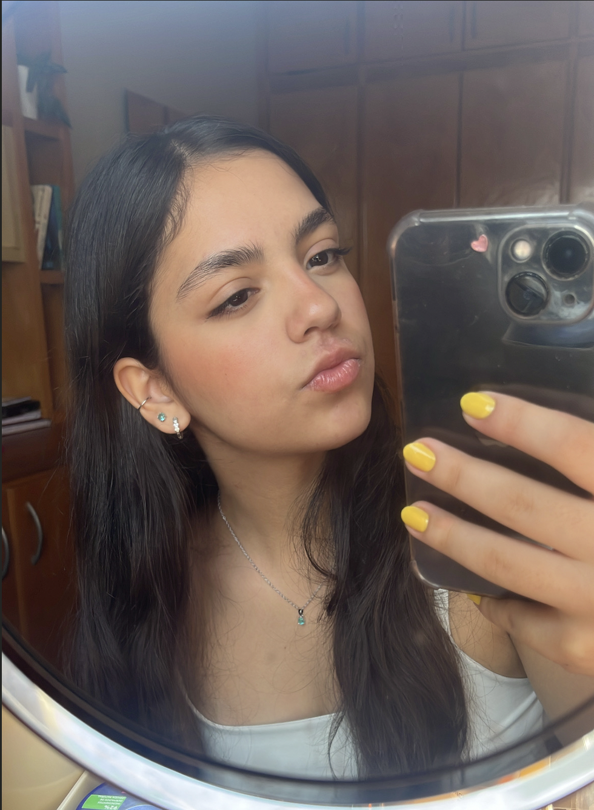

Oi, eu sou a Júlia!
Tenho 18 anos e estou no 2º semestre de Engenharia de Software na UFMS e vim morar em Campo Grande há 5 anos.
Vou começar a trabalhar em breve em uma ERP de energia solar em desenvolvimento e estou bem animada para aprender muita coisa por lá.
Por que Engenharia de Software?
Decidi o curso no terceiro ano do ensino médio. Nunca fui apaixonada por tecnologia, mas comecei a fazer um curso de programação básica e acabei me interessando.
Escolhi Engenharia de Software porque é uma área com futuro, que pode me trazer novas experiências e me dá flexibilidade. Se um dia eu quiser fazer outra faculdade ou investir em outro interesse meu, vou ter essa liberdade.
O que estou aprendendo
Tecnologia ainda é uma coisa bem recente na minha vida, então ainda estou desenvolvendo meus conhecimentos. Por enquanto:
- Lógica de programação
- Prototipação de telas (as atividades de IHC que estão na página inicial)
- Conhecimentos mais básicos do universo de computação
- HTML e CSS
- Noções de Java e C++
Fora da faculdade
Culinária
Gosto de cozinhar e penso em estudar mais sobre isso.
Ginástica artística
Meu esporte favorito que competi por anos.
Crochê
Um dos meus passatempos favoritos.
Cerâmica
Estou começando a tentar coisas novas.
Quer conversar? Me manda uma mensagem.